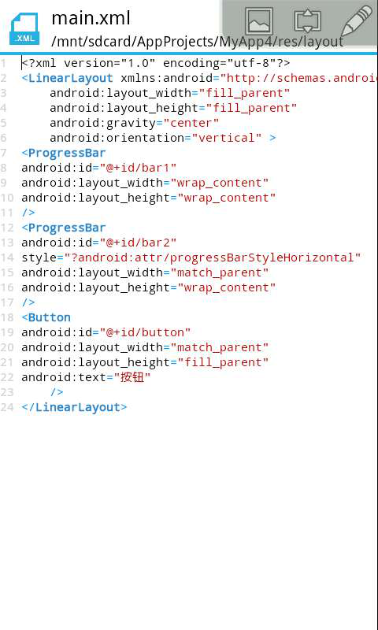
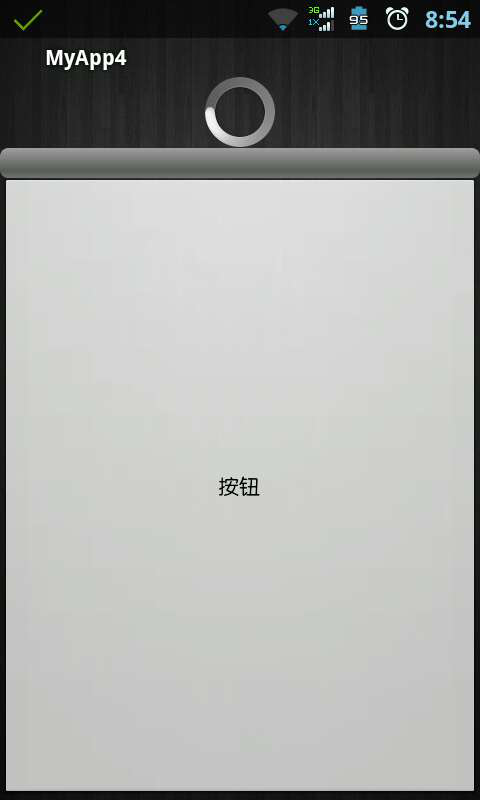
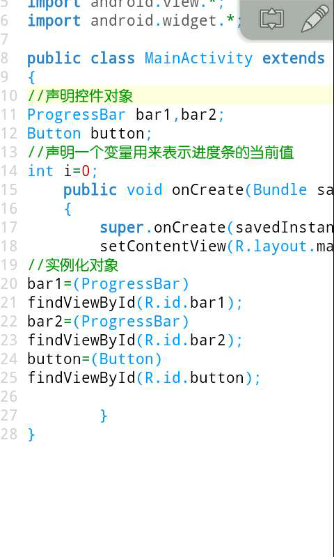
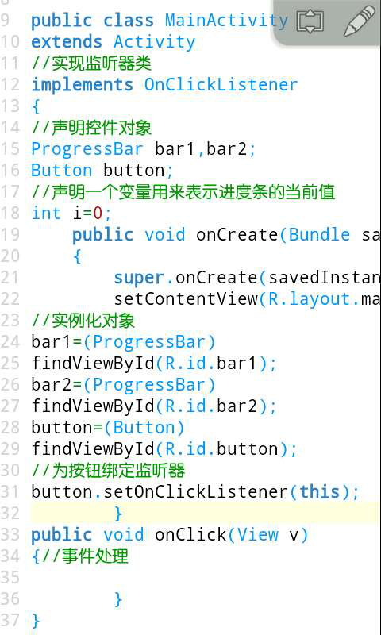
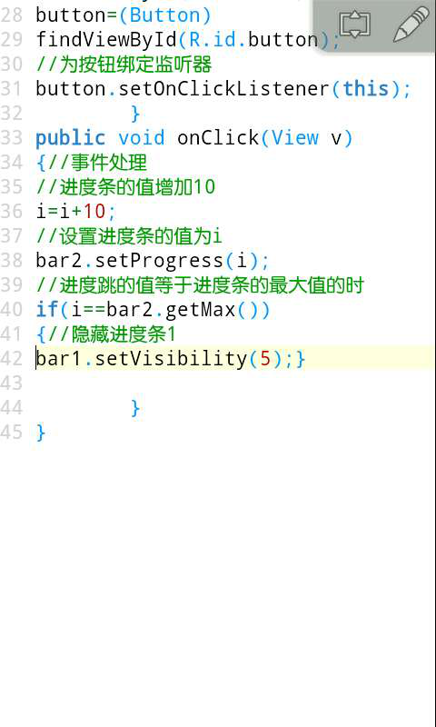
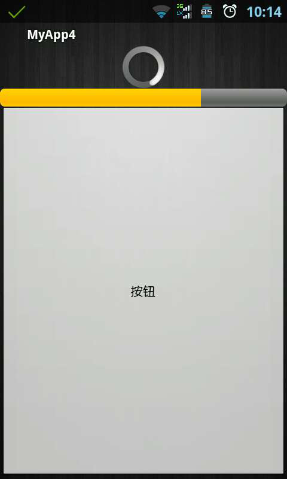

ProgressBar介绍(16课)
什么是ProgressBar呢，就是进度条，有默认的样式就是一个圆在不停的转，比如我们在浏览网页的时候网页还没有加载完的时候就会看到。我们可以设置一下样式，横向进度条，比如我们平常在下载内容的时候也会看到。今天我们来做一个小练习，定义两个进度条，一个是默认样式，一个是横向样式，然后再布局一个按钮，我们点击按钮后，横向进度条就前进十分之一，当横向进度条走完以后我们把默认转圈的进度条隐藏。
首先我们新建一个项目，打开我们的布局文件，定义两个ProgressBar，再定义一个按钮，为按钮添加一个id为button。我们第一个进度条为它添加一个id叫bar1，宽度和高度都为包含内容，这个就是默认的进度条，一个圆在不停的转圈。然后我们为第2个进度条添加一个id叫做bar2，我们为它添加这样一个属性 style="?android:attr/progressBarStyleHorizontal" 设置它的样式为横向进度条。宽为匹配父控件，高为包含内容。

然后我们运行我们的项目，最上面的就是我们的默认进度条在一直转，接下来的就是我们的横向进度条，再下面就是我们的按钮。

然后我们打开我们的java代码，声明两个进度条对象一个按钮对象，再声明一个变量i表示第二个横向进度条的当前值。并且把对象找出来。

接下来我们实现监听器类，复写onClick方法，并且为按钮绑定监听器。

然后来看我们onClick方法中的事件处理，我们点击一下按钮就让横向进度条前面十分之一，前面我们声明了一个整型变量i，让i=i+10;因为我们进度条默认的最大值是100，然后我们通过 bar2.setProgress(i);设置进度条的值。接下来再进行判断 if(i==bar2.getMax())当前进度条的值是不是等于进度条的最大值。 getMax()方法返回一个整型，因为我们没有修改进度条的最大值，所以我们也可以写成100。 bar1.setVisibility(5);这个方法用来隐藏我们的控件，里面有一个整型参数，如果为5表示隐藏，如果为1表示显示。

接下来运行我们的项目，我们点击一下按钮，横向进度条就前进十分之一，那个颜色比较深的就代表我们的当前进度，我们的进度走完以后，默认的那个转圈进度条就会消失。
414000